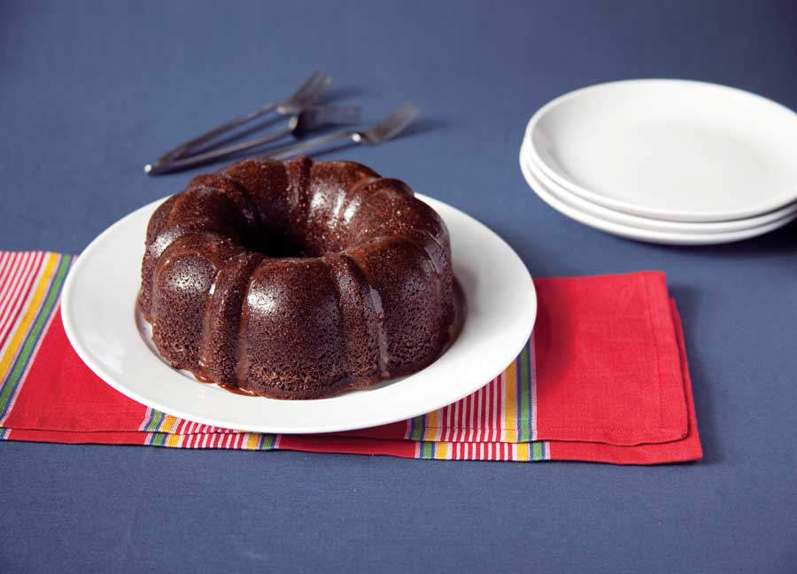

Barley seems like the perfect antidote to many of the things that ail us. Try this recipe for Chocolate Barley Bundt Cake to bring this nutritious grain into your kitchen, and see Sweet and Savory Barley Recipes for barley nutritional information and more great barley recipes.
CHOCOLATE BARLEY BUNDT CAKE
Ingredients:
1/2 cup cocoa
3/4 cup boiling water
13⁄4 cups barley flour
13⁄4 cups sugar
1 tsp baking soda
1 tsp salt
1/2 cup canola oil
7 large eggs, separated
2 tsp vanilla
1/2 tsp cream of tartar
For icing:
2 cups powdered sugar
1/4 cup cocoa
1/2 tsp vanilla
3 tbsp milk (as needed)
Instructions:
Generously grease a Bundt pan. Preheat oven to 350 degrees Fahrenheit. In a small bowl, stir cocoa into boiling water until smooth, then let cool completely. In a large bowl, whisk the barley flour, sugar, baking soda and salt. In the center of the bowl, make a well and add in order oil, egg yolks, the cocoa mixture and vanilla. Beat with spoon until smooth.
Beat egg whites and cream of tartar until stiff. Fold a fourth of the whites into the batter to lighten it, then fold in the rest. Pour into prepared pan. Bake on the low rack for 60 to 65 minutes, until the cake springs back when pressed and a toothpick inserted into the center of the cake comes out clean. Let cool for 20 minutes in the pan before running a paring knife around the edges and then inverting it onto a cake plate.
When the cake is completely cooled, stir together the powdered sugar and cocoa in a bowl, then stir in the vanilla and milk. Add milk just to make a thick glaze that can be poured over the cake. Drizzle the glaze over the Bundt. Let dry for a few minutes before cutting with a serrated knife. Serves 12.
Greek Barley Salad Recipe
Japanese Barley Bowl Recipe
Turkey and Barley Meatloaf with Sage Recipe
|
 EMILY HELLER Drizzle a chocolate icing over your cake to make it an even sweeter treat. |
|
|